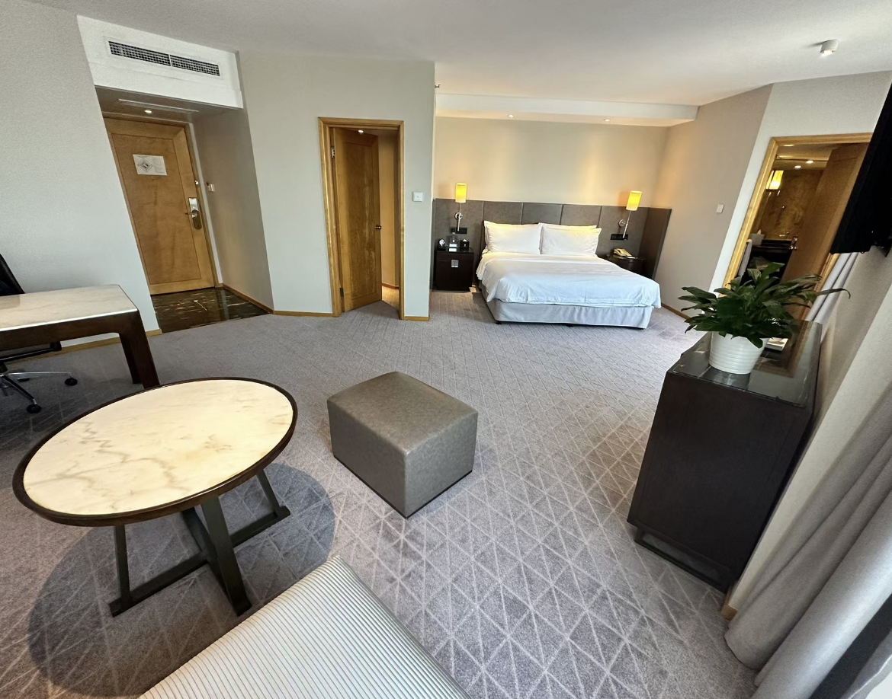
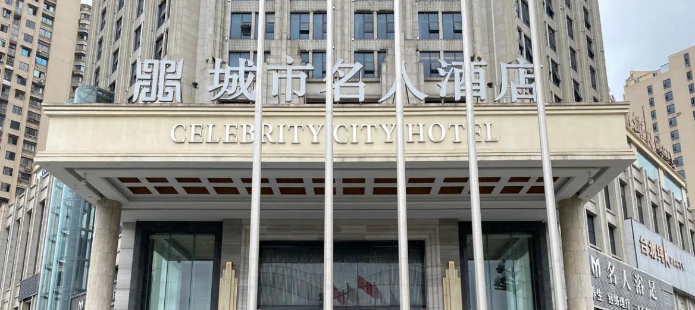

Transportation
Airlines
Najing Lukou International Airport
- About 35 km from the city centre
- Airport bus: RMB 30/person
- Taxi: about 100 RMB
- Metro Line S1 Directly
Railway
Nanjing / Nanjing north Station
- High-speed Railway Directly to Major Cities in China
- Metro Line1 and Line3
- Introduction to Nanjing Attractions Covered by Buses
Metro
Nanjign Metro
- Total 10 Metro Line
- Coverage of major attractions and shopping districts
- Operating time：6:00-23:00
Accommodation Recommended

Jinling Hotel
Xinjiekou
Free WiFi
Gym
Business centre
￥880

Celebrity City Hotel
Fuzi Temple
Free Parking
Cateen
Meeting Room
￥460
Tips
Best Season
Spring and autumn have a pleasant climate and are the best time to visit Nanjing. Avoid the scorching heat and rainy season of July-August.
Transporation Card
It is recommended to apply for the Nanjing Citizen Card, which can be used for public transport such as metro and buses, as well as enjoying discounts on attraction tickets.
Accommodation Advice
Xinjiekou, Fuzimiao, 1912 neighbourhood and other locations with convenient transport, dining and shopping, suitable for tourists to stay.